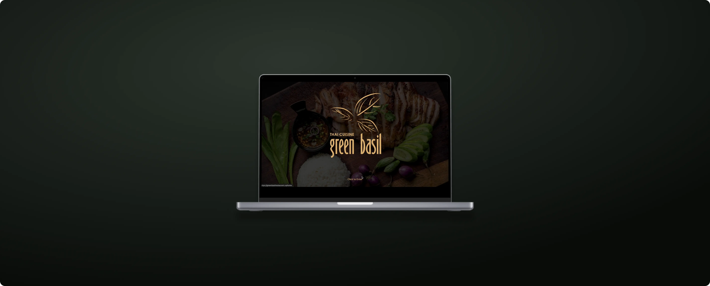
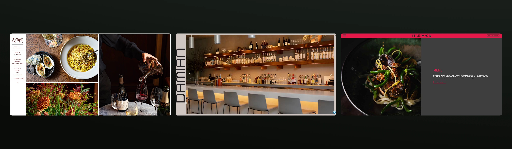

BACK

Website Design
Timeline
Feb. - Apr. 2025
Role
Lead UX/UI Designer
Disciplines
UX/UI Design, Branding Design
Team
Me and 2 others (2 designers, 1 developer)
Intro
The Problem
As workers transition back to a in-person work schedule, we needed to entice their once most prominent customer base back to GB.
To grow this audience, we needed to design the website to frame GB as a upscaled night-time dining destination.
GB’s most prominent customer base, they needed a concise directory to GB’s delivery and takeout services
Research
Striking food, drink and interior photos created memorability.
Key pages were always easy to navigate within 2 clicks.
Primary + Tonal colours created an elegant look.

Solution
Vendor Profile
Attendee Saved Page
Market Page
In-Event Directory
Reflection